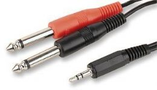
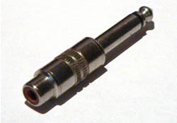

Tutorial - Connecting an Instrument
- Some PC laptops may have a hardware or software switch to convert the microphone port to line-level stereo.
- Some PC notebooks/netbooks may have a compliant microphone input port which will tolerate line level inputs and may provide stereo input.
Always try line-level input first, and only use a microphone input if you cannot otherwise get adequate recording volume. You can buy modestly priced, decent quality USB interfaces with line level stereo input if needs be.
Connecting a keyboard to your computer
If the keyboard has RCA jacks on the back then the best way to connect it is with a dual RCA to stereo mini-plug cable as shown below, plugged from the RCA output jacks on the back of the keyboard to the line input port of the computer.

A Stereo Mini plug to dual RCA cable
If the keyboard has two 1/4 inch jacks on the back you will need a 2 x 1/4 inch jack to stereo 3.5mm jack, or you could use a dual RCA to stereo mini-plug cable, and two RCA to 1/4 inch adapters. Plug the RCA plugs into the RCA jacks on the adapters - you now have a dual 1/4 inch to stereo mini-plug cable.
  1/4 inch jack to stereo 3.5mm jack An RCA to 1/4 inch adapter
If the keyboard has neither of these options, but does have a 1/4 inch or 3.5mm stereo headphone jack, the easiest way to connect it is with a cable with a stereo mini-plug on one end (for the computer), and a stereo jack plug of appropriate size at the other end for the keyboard headphone socket. Plug the headphone output of the keyboard to the line input port of the computer. You will lose the ability to listen directly to the keyboard using headphones, and any internal speakers will probably be muted. You can get around this using a headphone splitter cable, or by enabling Software Playthrough in Audacity, (Software Playthrough will introduce a delay between the time you play a note and the time you hear it). This topic is covered in more detail in a following section.
Connecting a guitar to your computer
If you have a "USB Guitar" then you can skip ahead to testing the input connection for your operating system.
Generally the output level from an electric guitar (or electrical pickup in an acoustic guitar) is sufficient to drive the line input port on a computer. Turn the volume control on the guitar all the way up. You will need a shielded adapter cable that goes from a 1/4 inch mono plug (to plug into the guitar) to a mono mini-plug (to plug into the computer line input port).
You probably have a guitar cable for plugging the guitar into an amplifier, and you may be tempted to buy a 1/4 inch to 1/8 inch adapter instead, plug it into the computer line input then connect the guitar to the adapter using the cable - do not do this! This creates a heavy, stiff cable hanging off the back of your computer - the slightest tug in the wrong direction could damage your sound card!
If you cannot get a good recording level when connecting to the line input port (explained in a following section on setting recording levels in Audacity), you can try the microphone input on your computer (if you have one). Beware of overloading the microphone input. You can turn down the volume control on your guitar to compensate for the extra amplification in the microphone input port, but hum and noise may increase in comparison to using the line input port.
Most effect pedals are designed to deliver about the same volume to the amplifier as the unaffected guitar sound (the volume you get when the effect is bypassed). Thus you can connect your guitar to a pedal and then connect the pedal to the computer.
Some guitar amplifiers include a "direct output" for feeding the amplifier sound to recording or PA systems. Amplifiers designed for stage use that include this feature will usually have either a line-level 1/4 inch mono jack output, or a microphone-level balanced output using an XLR connector. Connecting this output to your computer microphone input is beyond the scope of this Tutorial - talk to the folks at your local music store.
| Some amplifiers have a 1/4 inch output for connecting an external speaker. This must not be connected directly to the computer sound card input as the signal level is far too high and may permanently damage the sound card. |
Some USB audio interfaces are specifically designed for connecting a guitar to a computer or may have a dedicated input for electric guitar or bass guitar. Talk to the folks at your local music store.